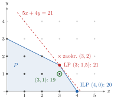
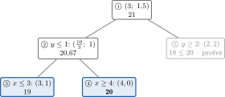
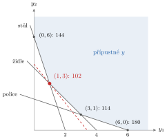
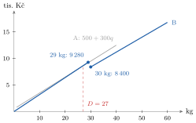
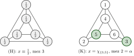

15.11 Úlohy navíc¶
Úlohy procvičují obě strany kapitoly: modelování (logické podmínky, fixní náklady a „buď, anebo“ z oddílu 15.2) a práci s mezí – LP relaxaci a dualitu (oddíl 15.4), branch & bound (oddíl 15.6), řezy a sílu formulace (oddíly 15.7 a 15.5). Modelovací úlohy řeš podle rámečku Postup na papíře.
Neoficiální úlohy
Úlohy v tomto oddílu nejsou oficiální zadání předmětu. Jsou to procvičovací úlohy navíc k látce kapitoly; všechna čísla v řešeních (optima, LP meze, vrcholy, stromy branch & bound, počty omezení) jsme přepočítali skripty a modely porovnali s hrubou silou: výčtem všech celočíselných řešení, LP/ILP řešičem a na náhodných malých instancích.
15.11.1 Rozcvička¶
Úloha 15.1 (batoh s logickými podmínkami)
Na víkendový přechod hor vybíráme vybavení. Batoh unese nanejvýš 6 kg; každá věc má váhu a „užitek“:
| věc | zkratka | váha [kg] | užitek |
|---|---|---|---|
| stan | \(T\) | 3 | 8 |
| hamaka | \(H\) | 1 | 5 |
| plachta | \(P\) | 1 | 3 |
| vařič | \(V\) | 1 | 4 |
| plynová kartuše | \(K\) | 1 | 2 |
| foťák | \(F\) | 1 | 4 |
| powerbanka | \(B\) | 1 | 3 |
| solární nabíječka | \(S\) | 1 | 1 |
Platí čtyři podmínky:
- (P1)Vařič bez kartuše je k ničemu a kartuše bez vařiče také: buď beru obojí, nebo nic z toho.
- (P2)Spím buď ve stanu, nebo v hamace – právě v jednom z nich.
- (P3)Beru-li hamaku, beru i plachtu.
- (P4)Beru-li foťák, musím ho mít čím nabíjet: powerbankou nebo solární nabíječkou.
- Zapište úlohu jako ILP (proměnné, omezení, účelová funkce, velikost).
- Ověřte tabulkou všech kombinací, že nerovnice pro (P4) zakazuje přesně to, co věta.
- Které z výběrů \(\{T,V,K,F\}\), \(\{H,V,K,F,B\}\), \(\{T,F,B\}\) jsou přípustné?
- Najděte optimum a zdůvodněte, že lepší není.
Řešení
a) Proměnné. \(x_i\in\{0,1\}\) pro \(i\in\{T,H,P,V,K,F,B,S\}\): \(x_i=1\) právě když věc \(i\) beru.
Omezení.
- (O0) \(3x_T+x_H+x_P+x_V+x_K+x_F+x_B+x_S\le 6\) – batoh unese 6 kg.
- (P1) \(x_V=x_K\) – ekvivalence. Je to dvojice implikací \(x_V\le x_K\) a \(x_K\le x_V\); zakáže kombinace \((1,0)\) i \((0,1)\).
- (P2) \(x_T+x_H=1\) – „právě jeden“: \(\ge1\) je „aspoň jeden“, \(\le1\) „nejvýš jeden“.
- (P3) \(x_H\le x_P\) – implikace \(H\Rightarrow P\).
- (P4) \(x_F\le x_B+x_S\) – implikace, v jejímž závěru je disjunkce: při \(x_F=1\) musí být pravá strana aspoň 1, tj. \(B\lor S\); při \(x_F=0\) nerovnice neříká nic.
Účel. \(\max\ 8x_T+5x_H+3x_P+4x_V+2x_K+4x_F+3x_B+x_S\). Velikost: 8 binárních proměnných, 5 omezení (rovnice (P1) a (P2) počítáme jako jedno omezení).
b) Tabulka pro (P4). Věta je nepravdivá jen tehdy, když beru foťák a nemám ani powerbanku, ani nabíječku:
| \(x_F\) | \(x_B\) | \(x_S\) | \(x_F\le x_B+x_S\) | věta (P4) |
|---|---|---|---|---|
| 0 | libovolně | libovolně | platí (\(0\le\cdot\)) | platí |
| 1 | 0 | 0 | neplatí (\(1\le0\)) | neplatí |
| 1 | 0 | 1 | platí | platí |
| 1 | 1 | 0 | platí | platí |
| 1 | 1 | 1 | platí | platí |
První řádek shrnuje čtyři kombinace s \(x_F=0\). Nerovnice tedy zakazuje přesně jedinou kombinaci ze všech osmi, stejně jako věta.
c) Kontrola výběrů.
- \(\{T,V,K,F\}\): váha \(3+1+1+1=6\le6\), (P1)–(P3) platí, ale (P4) ne: \(x_F=1>x_B+x_S=0\). Nepřípustný.
- \(\{H,V,K,F,B\}\): váha 5, ale (P3) neplatí: \(x_H=1>x_P=0\). Nepřípustný.
- \(\{T,F,B\}\): váha 5, (P1) (\(0=0\)), (P2) (\(1+0=1\)), (P3) (\(0\le0\)), (P4) (\(1\le1+0\)). Přípustný, užitek \(8+4+3=15\).
d) Optimum. Podle (P2) rozebereme dva případy.
- Stan (\(x_T=1\), \(x_H=0\)): 3 kg a užitek 8, zbývají 3 kg. Všechny zbylé věci váží 1 kg, vybíráme tedy nejvýš tři z \(P,V,K,F,B,S\). Vezmu-li vařič, musím i kartuši, a ke dvojici (užitek 6) se vejde jedna věc s užitkem nejvýš 3 (foťák ne, potřeboval by i nabíjení): nejvýš 9. Bez vařiče nesmím vzít ani kartuši (P1); nejlepší trojice z \(P,F,B,S\) s užitky \(3,4,3,1\) je \(F,B,P\) s užitkem 10 a (P4) splňuje. Celkem nejvýš \(8+10=18\).
- Hamaka (\(x_H=1\), \(x_T=0\)): (P3) vynutí plachtu; 2 kg a užitek \(5+3=8\), zbývají 4 kg. Zbylé věci \(V,K,F,B,S\) váží dohromady 5 kg (užitek \(4+2+4+3+1=14\)), takže aspoň jednu musíme vynechat. Vynechání \(S\) stojí 1 a (P4) platí dál díky \(B\); vynechání kterékoli jiné stojí aspoň 2 (bez \(K\) musí pryč i \(V\)). Nejlépe 13, celkem \(8+13=21\).
Optimum je 21: \(\{H,P,V,K,F,B\}\) s váhou přesně 6 kg. (Ověřeno výčtem všech \(2^8=256\) výběrů: model připouští přesně výběry, které splňují slovní podmínky, a jediné optimum je toto.)
Úloha 15.2 (LP relaxace v rovině)
Je dáno ILP
- Nakreslete polyedr \(P\) LP relaxace a najděte LP optimum.
- Najděte celočíselné optimum.
- Co dá zaokrouhlení LP optima na nejbližší celý bod a zaokrouhlení dolů?
- O kolik se liší mez \(\mathrm{OPT}_{LP}\) od optima? Spočítejte i gap \((B-z)/|z|\) z oddílu 15.6 pro \(B=\mathrm{OPT}_{LP}\) a \(z=\mathrm{OPT}\).
Řešení
a) Vrcholy \(P\). LP optimum leží ve vrcholu (oddíl 15.4), stačí tedy vrcholy projít. Průsečík obou přímek: z \(x+2y=6\) je \(x=6-2y\), dosazením \(36-12y+4y=24\), tedy \(y=\tfrac32\) a \(x=3\). Na osách: \((4,0)\) (z \(6x=24\); \(4\le6\) platí) a \((0,3)\) (z \(2y=6\); \(12\le24\) platí). Body \((6,0)\) a \((0,6)\) vrcholy nejsou, porušují druhé, resp. první omezení.
| vrchol | \((0,0)\) | \((4,0)\) | \((3,\tfrac32)\) | \((0,3)\) |
|---|---|---|---|---|
| \(5x+4y\) | 0 | 20 | 21 | 12 |
LP optimum je \((3,\tfrac32)\) s \(\mathrm{OPT}_{LP}=21\).
b) Celočíselné optimum. Z \(x+2y\le6\) je \(y\le3\). Pro každé \(y\) vezmeme největší přípustné \(x\) (účel roste v \(x\)): \(y=0\): \(6x\le24\), \(x\le4\), bod \((4,0)\) s hodnotou 20; \(y=1\): \(6x\le20\), \(x\le3\), \((3,1)\) s 19; \(y=2\): \(x\le2\) (z obou omezení), \((2,2)\) s 18; \(y=3\): \(x\le0\), \((0,3)\) s 12. Tedy \(\mathrm{OPT}=20\) v bodě \((4,0)\). (Celočíselných přípustných bodů je 13, prošli jsme všechny skriptem.)
c) Zaokrouhlení. Nejbližší celý bod \((3,2)\) je nepřípustný: \(6\cdot3+4\cdot2=26>24\). Zaokrouhlení dolů \((3,1)\) přípustné je, ale má hodnotu jen 19 – optimum \((4,0)\) leží v jiném vrcholu \(P\).
d) Mez vs. optimum. \(21-20=1\), gap \((21-20)/20=5\,\%\). Mez 21 je celé číslo, takže ani zaokrouhlení meze dolů (jako v příkladu 15.13) nepomůže: z LP samotného víme jen \(\mathrm{OPT}\le21\). Že je 20 opravdu optimum, dokáže až branch & bound v úloze 15.3 (nebo výčet výše).

Polyedr \(P\) (modře) a celočíselné body (tmavé). Čárkovaná přímka hodnoty 21 se \(P\) dotýká jen v LP optimu. Všimni si: zaokrouhlený bod \((3,2)\) leží mimo \(P\), zaokrouhlení dolů \((3,1)\) optimum není a celočíselné optimum \((4,0)\) je jiný vrchol.
15.11.2 Na úrovni testu¶
Úloha 15.3 (branch & bound krok za krokem)
Vyřešte ILP z úlohy 15.2 algoritmem branch & bound (algoritmus 15.1). Uzly procházejte do hloubky a u každého větvení zpracujte nejdřív větev „\(\le\)“. U každého uzlu uveďte LP optimum, mez a co se s uzlem stane; nakreslete strom a po každém uzlu napište incumbent \(z\), globální mez \(B\) a gap.
Řešení
Výpočet LP v uzlech. Ve dvou proměnných stačí projít vrcholy polyedru uzlu (polyedr \(P\) z úlohy 15.2 plus omezení z cesty od kořene).
- Kořen (\(z=-\infty\)): LP optimum \((3,\tfrac32)\), mez 21 (úloha 15.2). \(x\) je celé, \(y=1{,}5\) ne \(\Rightarrow\) větvíme \(y\le1\) / \(y\ge2\).
- \(y\le1\): vrcholy \((0,0)\), \((4,0)\), \((0,1)\) a průsečík \(6x+4y=24\) s \(y=1\), tj. \((\tfrac{10}3,1)\) (\(x+2y=\tfrac{16}3\le6\) platí). Hodnoty \(0\), \(20\), \(4\), \(\tfrac{50}3+4=\tfrac{62}3\approx20{,}67\). Mez \(20{,}67>z\), \(x=\tfrac{10}3\) není celé \(\Rightarrow\) větvíme \(x\le3\) / \(x\ge4\).
- \(y\le1\), \(x\le3\): bod \((3,1)\) je přípustný (\(22\le24\), \(5\le6\)) a má obě proměnné na horní mezi uzlu; účel roste v \(x\) i \(y\), takže je to LP optimum s hodnotou 19. Je celočíselné a \(19>-\infty\) \(\Rightarrow\) incumbent \(z=19\).
- \(y\le1\), \(x\ge4\): z \(6x+4y\le24\) a \(x\ge4\) plyne \(4y\le0\), tedy \(y=0\) a \(x=4\). Jediný bod \((4,0)\) s hodnotou \(20>19\) \(\Rightarrow\) nový incumbent \(z=20\).
- \(y\ge2\): vrcholy \((0,2)\), \((0,3)\) a \((2,2)\) (z \(x+2y=6\); \(6\cdot2+4\cdot2=20\le24\)). Průsečík \(6x+4y=24\) s \(y=2\) je \((\tfrac83,2)\), ten porušuje \(x+2y\le6\). Hodnoty \(8\), \(12\), \(18\): mez \(18\le z=20\) \(\Rightarrow\) prořez mezí (že je LP řešení \((2,2)\) celočíselné, nehraje roli – lepší není).
Žádný otevřený uzel nezbyl \(\Rightarrow\) optimum je 20 v bodě \((4,0)\).
Průběh \(z\), \(B\) a gapu. Neřešený uzel dědí mez rodiče; \(B\) je největší mez přes otevřené uzly.
| uzel | co se stalo | \(z\) | \(B\) | gap |
|---|---|---|---|---|
| 1 | kořen, větvení na \(y\) | \(-\infty\) | 21 | – |
| 2 | mez \(20{,}67\), větvení na \(x\) | \(-\infty\) | 21 | – |
| 3 | incumbent 19 | 19 | 21 | \(10{,}5\,\%\) |
| 4 | incumbent 20 | 20 | 21 | \(5\,\%\) |
| 5 | prořez (\(18\le20\)) | 20 | 20 | \(0\) |
Po uzlu 2 je \(B\) pořád 21: otevřený uzel \(y\ge2\) ještě nese mez kořene. Gap po uzlu 3 je \((21-19)/19\approx0{,}105\).

Strom branch & bound: číslo v kroužku je pořadí zpracování, v uzlu LP optimum a mez. Modře uzly, kde vznikl incumbent, šedě prořezaný uzel. Všimni si: uzel 5 se zahodí jen díky mezi. Kdybychom u každého větvení zpracovali nejdřív větev „\(\ge\)“, stal by se uzel \(y\ge2\) incumbentem s hodnotou 18, pak uzel \(x\ge4\) incumbentem s hodnotou 20 a na konci by se prořízl uzel \(x\le3\) (\(19\le20\)); strom by měl stejně uzlů. (Obě pořadí ověřena skriptem.)
Úloha 15.4 (duál a slabá dualita)
Truhlárna vyrábí stoly, židle a police. Stůl spotřebuje 3 jednotky dřeva a 1 hodinu práce a vydělá 6 (tisíc Kč), židle 1 jednotku dřeva, 1 hodinu a vydělá 4, police 1 jednotku dřeva, 3 hodiny a vydělá 6. K dispozici je 30 jednotek dřeva a 24 hodin práce. LP s počty \(x_1,x_2,x_3\) stolů, židlí a polic:
- Napište duální program.
- Mistr tvrdí: „Víc než 108 vydělat nejde.“ Dokažte to pomocí \(y=(2,2)\). Proč \(y=(2,1)\) žádnou mez nedává?
- Vyřešte duál graficky. Jaká je nejlepší mez?
- Najděte plán výroby, který mez dosáhne, a zdůvodněte, že je optimální i tehdy, když se vyrábí jen celé kusy.
Řešení
a) Duál. Primál je ve tvaru \(\max c^Tx\), \(Ax\le b\), \(x\ge0\) (definice 15.10): omezení primálu (dřevo, práce) \(\leftrightarrow\) proměnné duálu \(y_1,y_2\); proměnné primálu (stůl, židle, police) \(\leftrightarrow\) omezení duálu; \(b=(30,24)\) a \(c=(6,4,6)\) si vymění role, \(A\) se transponuje:
b) Mez 108. \(y=(2,2)\) je přípustné: \(3\cdot2+2=8\ge6\), \(2+2=4\ge4\), \(2+3\cdot2=8\ge6\). Sečteme dvojnásobek obou omezení primálu: \(2(3x_1+x_2+x_3)+2(x_1+x_2+3x_3)=8x_1+4x_2+8x_3\le2\cdot30+2\cdot24=108\). Pro \(x\ge0\) je \(6x_1+4x_2+6x_3\le8x_1+4x_2+8x_3\), takže každý přípustný plán vydělá nejvýš 108. To je přesně důkaz slabé duality (věta 15.11) pro jedno konkrétní \(y\).
\(y=(2,1)\) přípustné není: u židle je \(2+1=3<4\) a u police \(2+3=5<6\). Součet omezení dá \(7x_1+3x_2+5x_3\le84\), ale \(4x_2\le3x_2\) ani \(6x_3\le5x_3\) pro kladné \(x_2\), \(x_3\) neplatí, takže z toho na zisk nic neplyne. Že 84 opravdu mez není, ukazuje plán \(x=(0,24,0)\): dřevo \(24\le30\), práce \(24\le24\), zisk \(96>84\).
c) Grafické řešení duálu. Přípustná oblast je neomezená, ohraničená zdola třemi přímkami a osami. Vrcholy:
- stůl \(\cap\) osa \(y_2\): \((0,6)\); židle \(6\ge4\), police \(18\ge6\) platí;
- stůl \(\cap\) židle: odečtením \(3y_1+y_2=6\) a \(y_1+y_2=4\) je \(2y_1=2\), tedy \((1,3)\); police \(1+9=10\ge6\);
- židle \(\cap\) police: odečtením \(y_1+3y_2=6\) a \(y_1+y_2=4\) je \(2y_2=2\), tedy \((3,1)\); stůl \(10\ge6\);
- police \(\cap\) osa \(y_1\): \((6,0)\); stůl \(18\ge6\), židle \(6\ge4\).
Hodnoty \(30y_1+24y_2\): \(144\), 102, \(114\), \(180\). Účel má kladné koeficienty, oblast leží v kladném kvadrantu, takže minimum je ve vrcholu: nejlepší mez je 102 pro \(y=(1,3)\).

Duální oblast (modře) a její vrcholy s hodnotami \(30y_1+24y_2\). Čárkovaně přímka hodnoty 102, která se oblasti dotýká v \((1,3)\).
d) Plán s hodnotou 102. Hledáme \(x\), pro které je řetězec z důkazu slabé duality \(c^Tx\le y^TAx\le y^Tb\) samými rovnostmi ((nad rámec přednášky) tzv. komplementarita). Pro \(y=(1,3)\) je \(A^Ty=(3+3,\ 1+3,\ 1+9)=(6,4,10)\). U police je \(10>6\), první nerovnost je proto rovnost jen při \(x_3=0\). Obě \(y_i\) jsou kladná, druhá nerovnost je rovnost jen tehdy, když obě omezení platí s rovností: \(3x_1+x_2=30\), \(x_1+x_2=24\). Odtud \(x_1=3\), \(x_2=21\), \(x_3=0\); kontrola: dřevo \(9+21=30\), práce \(3+21=24\), zisk \(18+84=102\).
Plán \((3,21,0)\) je přípustný a má hodnotu 102, což je mez platná pro každý přípustný plán; je tedy optimální. Je celočíselný a celočíselné plány jsou podmnožinou všech, takže i celočíselné optimum je 102: 3 stoly, 21 židlí, žádné police. Police se nevyplatí, protože při „cenách“ \(y=(1,3)\) jejich spotřeba stojí \(10>6\). (Ověřeno LP řešičem pro primál i duál a výčtem všech celočíselných plánů.)
Úloha 15.5 (nákup s množstevní slevou)
Kavárna potřebuje na měsíc aspoň \(D\) kg kávy (koupit smí i víc, káva se nezkazí). Kupuje se po celých kilogramech od dvou dodavatelů:
- Dodavatel A: 300 Kč/kg, za každou nenulovou objednávku navíc doprava 500 Kč; dodá nejvýš 40 kg.
- Dodavatel B: bez dopravy; při objednávce do 29 kg stojí kilogram 320 Kč, při objednávce aspoň 30 kg platí celá objednávka 280 Kč/kg; dodá nejvýš 60 kg.
- Formulujte úlohu najít nejlevnější nákup jako ILP: proměnné s oborem a významem, omezení po skupinách s tím, co zajišťují, účelová funkce, velikost. Zdůvodněte, proč optimum ILP je nejlevnější nákup.
- Spočítejte optimum pro \(D=27\) a pro \(D=70\).
Řešení
Co volíme. Kolik kg od koho – a u B navíc, ve kterém cenovém pásmu jsme. Cena od B jako funkce množství \(q\) není lineární: \(320q\) pro \(q\le29\) a \(280q\) pro \(30\le q\le60\); v bodě 30 cena skočí dolů (z 9 280 Kč za 29 kg na 8 400 Kč za 30 kg). Přípustné dvojice (množství, cena) tvoří dva oddělené úseky – to je „buď, anebo“ z oddílu 15.2. Rozdělíme proto nákup od B na dvě proměnné a binární přepínač vybere pásmo.
1. Proměnné.
- \(x_A\in\mathbb Z_{\ge0}\) … kg kávy od A; \(y_A\in\{0,1\}\) … u A objednáváme (platíme dopravu);
- \(u\in\mathbb Z_{\ge0}\) … kg od B za plnou cenu, \(v\in\mathbb Z_{\ge0}\) … kg od B za zlevněnou cenu;
- \(z\in\{0,1\}\) … objednávka u B je v pásmu se slevou (aspoň 30 kg).
2. Omezení.
- (O1) \(x_A+u+v\ge D\) – kávy je dost.
- (O2) \(x_A\le 40\,y_A\) – od A jen s placenou dopravou a nejvýš 40 kg (vypínač \(x\le My\) s \(M=40\), které je zároveň kapacitou).
- (O3) \(u\le 29\,(1-z)\) – plná cena jen bez slevy (\(z=1\) dá \(u=0\)) a nejvýš 29 kg.
- (O4) \(30\,z\le v\le 60\,z\) (dvě nerovnice) – při \(z=0\) je \(v=0\), při \(z=1\) je \(30\le v\le60\): sleva jen pro objednávku 30 až 60 kg.
3. Účel. \(\min\ 500\,y_A+300\,x_A+320\,u+280\,v\).
4. Velikost. 5 proměnných (2 binární, 3 celočíselné) a 5 nerovnic (plus nezápornost).
5. Proč optimum ILP = nejlevnější nákup.
- Nákup \(\to\) ILP: nákup \(q_A\le40\) od A a \(q_B\le60\) od B s \(q_A+q_B\ge D\) přepíšeme jako \(x_A=q_A\), \(y_A=1\) právě když \(q_A>0\); je-li \(q_B\ge30\), pak \(z=1\), \(v=q_B\), \(u=0\), jinak \(z=0\), \(u=q_B\), \(v=0\). Všechna omezení platí a účel je přesně cena nákupu.
- ILP \(\to\) nákup: z přípustného řešení vezmeme \(q_A=x_A\), \(q_B=u+v\). Při \(z=1\) je \(u=0\) a \(30\le q_B=v\le60\), cena od B je \(280v\) – přesně člen v účelu; při \(z=0\) je \(v=0\) a \(q_B=u\le29\) za \(320u\). Je-li \(x_A>0\), je podle (O2) \(y_A=1\) a doprava je započtená; při \(x_A=0\) smí být \(y_A=1\), to je ale jen dražší. Skutečná cena nákupu je tedy nejvýš hodnota účelu.
Oba směry dohromady: optimum ILP je rovno ceně nejlevnějšího nákupu.
Typická chyba. Bez \(z\), jen s \(u\le29\), \(v\le60\) a cenou \(320u+280v\), by model dovolil koupit 27 kg za zlevněnou cenu (7 560 Kč) – slevu bez dosažení 30 kg. Stejných 7 560 Kč dá i LP relaxace správného modelu (\(z=0{,}45\), \(v=27\)): binární přepínač se v relaxaci „rozpustí“ jako u big-M v oddílu 15.5.
Optimum pro \(D=27\): 8 400 Kč.
- Objednáme-li u A (\(y_A=1\)): se slevou u B stojí nákup aspoň \(500+8400>8400\); bez slevy stojí každý kg aspoň 300 Kč, celkem aspoň \(500+300\cdot27=8600\).
- Jen od B: bez slevy aspoň \(320\cdot27=8640\), se slevou aspoň \(280\cdot30=8400\).
Nejlevnější je koupit 30 kg od B za 8 400 Kč – o 3 kg víc, než je potřeba.
Optimum pro \(D=70\): 20 300 Kč. B dodá nejvýš 60 kg, takže \(x_A\ge10\) a \(y_A=1\). Bez slevy by bylo \(u\le29\) a \(x_A\ge41>40\), takže \(z=1\). Cena je pak \(500+300x_A+280v=500+280(x_A+v)+20x_A\ge500+280\cdot70+20\cdot10=20\,300\) a rovnost nastane pro \(x_A=10\), \(v=60\). Nákup: 10 kg od A, 60 kg od B.
(Ověřeno skriptem: pro všechna \(D=0,\dots,100\) dává ILP řešič, výčet všech celočíselných řešení modelu i přímý výčet všech nákupů \((q_A,q_B)\) stejné optimum.)

Cena nákupu od B (modře) a od A (šedě) podle množství. Všimni si: cena od B v bodě 30 skočí dolů, takže při \(D=27\) se vyplatí koupit víc. Graf ceny tvoří dva oddělené úseky; proto potřebujeme binární \(z\).
Úloha 15.6 (krycí nerovnosti batohu)
(nad rámec přednášky) Přednáška zmiňuje „knapsack cover“ jen jako jednu z rodin řezů v řešičích; tato úloha ukazuje, o co jde. Je dán batoh
Kryt je množina předmětů \(C\), které se do batohu dohromady nevejdou: \(\sum_{i\in C}w_i>10\). Je minimální, když se po odebrání libovolného předmětu už vejde.
- Vyřešte LP relaxaci a najděte celočíselné optimum.
- Dokažte, že pro každý kryt \(C\) platí krycí nerovnost \(\sum_{i\in C}x_i\le|C|-1\) pro všechna celočíselná řešení. Najděte všechny minimální kryty.
- Které krycí nerovnosti jsou řezy pro LP optimum z a)? Přidejte takovou nerovnost a pomocí kombinace omezení (dualita) dokažte, že nová LP mez je rovna celočíselnému optimu.
- Proč nerovnost pro neminimální kryt \(\{1,2,3\}\) nic nepřidá?
Řešení
a) LP relaxace. Hladově podle poměru cena/váha (příklad 15.9): poměry \(\tfrac96=1{,}5\), \(\tfrac75=1{,}4\), \(\tfrac54=1{,}25\), \(\tfrac33=1\). Předmět 1 celý (váha 6, cena 9), zbývá kapacita 4 a z předmětu 2 (váha 5) se vejdou \(\tfrac45\): \(x^*=(1,\tfrac45,0,0)\), \(\mathrm{OPT}_{LP}=9+\tfrac45\cdot7=14{,}6\).
Celočíselné optimum. Tři předměty se nevejdou nikdy (nejlehčí trojice \(\{2,3,4\}\) váží \(12>10\)), takže bereme nejvýš dva. Dvojice podle ceny: \(\{1,2\}\) (16) váží 11 – nevejde se; \(\{1,3\}\) (14) váží přesně 10. Proto \(\mathrm{OPT}=14\), předměty 1 a 3.
b) Platnost. Kdyby celočíselné přípustné \(x\) mělo \(\sum_{i\in C}x_i=|C|\), bralo by všechny předměty z \(C\) a jeho váha by byla aspoň \(\sum_{i\in C}w_i>10\) – spor s kapacitou. Na celých číslech tedy \(\sum_{i\in C}x_i\le|C|-1\).
Minimální kryty. Dvojice: jen \(\{1,2\}\) (11); ostatní dvojice váží nejvýš 10. Trojice: všechny jsou kryty (nejméně 12), minimální jsou ty, které neobsahují \(\{1,2\}\): \(\{1,3,4\}\) (13; bez jednoho prvku 7, 9, 10) a \(\{2,3,4\}\) (12; bez jednoho prvku 7, 8, 9). Čtveřice minimální není. Krycí nerovnosti:
c) Řez. V bodě \(x^*=(1,\tfrac45,0,0)\) je \(x_1+x_2=1{,}8>1\) – nerovnost \(x_1+x_2\le1\) ho odřízne, je to řez podle definice 15.21. Zbylé dvě \(x^*\) splňuje (\(1\le2\), \(0{,}8\le2\)), pro tento bod řezy nejsou.
Mez po přidání řezu: sečteme \(\tfrac54\times\) (batoh) a \(\tfrac32\times\) (řez):
Pro \(x\ge0\) je levá strana aspoň \(9x_1+7x_2+5x_3+3x_4\), takže LP s řezem má hodnotu nejvýš 14. Bod \((1,0,1,0)\) ji dosahuje. LP mez se tedy rovná celočíselnému optimu – optimum je dokázané bez větvení. Násobky najdeme jako řešení duálu (meze \(x_i\le1\) tu nepotřebujeme): hledáme \(a,b\ge0\) s \(6a+b\ge9\), \(5a+b\ge7\), \(4a\ge5\), \(3a\ge3\) a co nejmenším \(10a+b\); z \(4a\ge5\) je \(a\ge\tfrac54\) a pak stačí \(b=9-6\cdot\tfrac54=\tfrac32\).
d) Neminimální kryt. \(x_1+x_2+x_3\le2\) je součtem řezu \(x_1+x_2\le1\) a meze \(x_3\le1\), takže ji splňuje každý bod, který splňuje ty dvě. Nic nového neodřízne; nejsilnější jsou krycí nerovnosti minimálních krytů.
(Ověřeno skriptem: výčet všech 16 vektorů, platnost všech krycích nerovností, LP řešičem \(14{,}6\) bez řezu a \(14\) s řezem \(x_1+x_2\le1\).)
15.11.3 Těžší úlohy¶
Úloha 15.7 (nezávislá množina: hranová a kliková formulace)
Pro graf \(G=(V,E)\) hledáme největší nezávislou množinu (\(\prob{Independent Set}\), definice 8.1, zde v optimalizační verzi; velikost optima je \(\alpha(G)\)). Dvě formulace:
- (H) hranová: \(\max\sum_v x_v\) při \(x_u+x_v\le1\) pro každou hranu \(\{u,v\}\in E\), \(x\in\{0,1\}^V\);
- (K) kliková: \(\max\sum_v x_v\) při \(\sum_{v\in Q}x_v\le1\) pro každou maximální kliku \(Q\) (aspoň se dvěma vrcholy), \(x\in\{0,1\}^V\).
- Dokažte, že (H) a (K) mají stejná celočíselná řešení.
- Dokažte, že polyedr LP relaxace (K) leží v polyedru relaxace (H), takže mez (K) je vždy aspoň tak dobrá.
- Spočítejte obě LP meze a \(\alpha(G)\) pro trojboký hranol (obrázek níže).
- Ukažte na \(K_n\), že poměr \(\mathrm{OPT}_{LP}/\mathrm{OPT}\) formulace (H) může být libovolně velký.
- Na kružnici \(C_5\) se obě formulace shodují. Spočítejte LP mez a odvoďte řez postupem z příkladu 15.22 (sečti a zaokrouhli), který ji opraví.
Řešení
a) Stejná celočíselná řešení. Celočíselné \(x\) je charakteristický vektor množiny \(S\subseteq V\). Podmínky (H) říkají přesně, že žádná hrana nemá oba konce v \(S\), tj. \(S\) je nezávislá.
- \(S\) nezávislá \(\Rightarrow\) (K): každé dva vrcholy kliky jsou sousední, takže klika obsahuje nejvýš jeden vrchol \(S\) a \(\sum_{v\in Q}x_v\le1\).
- (K) \(\Rightarrow\) \(S\) nezávislá: kdyby \(u,v\in S\) byly sousední, hrana \(\{u,v\}\) je klika a leží v nějaké maximální klice \(Q\); pak \(\sum_{w\in Q}x_w\ge x_u+x_v=2>1\), spor.
b) Relaxace (K) je uvnitř relaxace (H). Nechť \(x\in[0,1]^V\) splňuje (K) a \(\{u,v\}\in E\). Vezmeme maximální kliku \(Q\supseteq\{u,v\}\). Protože \(x\ge0\), je \(x_u+x_v\le\sum_{w\in Q}x_w\le1\), takže \(x\) splňuje i (H). Maximum přes menší množinu je nejvýš maximum přes větší: \(\alpha(G)\le\mathrm{OPT}_{LP}(K)\le\mathrm{OPT}_{LP}(H)\) (první nerovnost platí, protože obě jsou relaxace téhož ILP). Je to stejná myšlenka jako trojúhelníkové nerovnice u Vertex Cover v příkladu 15.15.
c) Trojboký hranol. Vrcholy \(1,2,3\) (trojúhelník), \(4,5,6\) (trojúhelník) a hrany \(\{1,4\},\{2,5\},\{3,6\}\); \(|E|=9\). Maximální kliky jsou oba trojúhelníky a tři „svislé“ hrany, takže (H) má 9 nerovnic a (K) jen 5.
- (H): \(x\equiv\tfrac12\) splňuje všech 9 nerovnic, hodnota 3. Víc nejde: každý vrchol leží ve třech hranách, součet všech hranových nerovnic dá \(3\sum_vx_v\le9\). Tedy \(\mathrm{OPT}_{LP}(H)=3\).
- (K): součet obou trojúhelníkových nerovnic dá \(\sum_vx_v\le2\). Množina \(\{3,5\}\) je nezávislá (sousedé 3 jsou \(1,2,6\)), takže \(2\le\alpha(G)\le\mathrm{OPT}_{LP}(K)\le2\).
Výsledek: \(\alpha(G)=\mathrm{OPT}_{LP}(K)=2<3=\mathrm{OPT}_{LP}(H)\). Kliková formulace má méně nerovnic a přesto přesnou mez.

Trojboký hranol. Vlevo optimum LP relaxace hranové formulace (všude \(\tfrac12\)), vpravo optimum relaxace klikové formulace – je rovnou celočíselné, nezávislá množina \(\{3,5\}\).
d) \(K_n\). (H) má \(\binom n2\) nerovnic a \(x\equiv\tfrac12\) je přípustné, takže \(\mathrm{OPT}_{LP}(H)\ge\tfrac n2\) (součtem všech hranových nerovnic, kde je každý vrchol \((n-1)\)-krát, dokonce \(=\tfrac n2\)). Ale \(\alpha(K_n)=1\) a (K) má jedinou nerovnici \(\sum_vx_v\le1\) s LP mezí 1. Poměr \(\mathrm{OPT}_{LP}(H)/\mathrm{OPT}=\tfrac n2\) roste nade všechny meze.
e) \(C_5\). Maximální kliky jsou jen hrany, takže (K) = (H). \(x\equiv\tfrac12\) dá hodnotu \(\tfrac52\) a součet pěti hranových nerovnic \(2\sum_vx_v\le5\) ukazuje, že víc nejde: \(\mathrm{OPT}_{LP}=\tfrac52\), kdežto \(\alpha(C_5)=2\). Řez: vydělíme součet dvěma, \(\sum_vx_v\le\tfrac52\); vlevo je pro celá \(x\) celé číslo, takže \(\sum_{v\in C_5}x_v\le2\). Platí pro všechna celočíselná řešení (odvodili jsme ji z platných nerovnic a celočíselnosti) a \(x\equiv\tfrac12\) porušuje (\(\tfrac52>2\)). S ním je LP mez 2 \(=\alpha(C_5)\), např. \(\{1,3\}\).
Poznámka. (nad rámec přednášky) Maximálních klik může být exponenciálně mnoho, proto se klikové nerovnice (stejně jako u barvení v úloze 8.3) přidávají jako řezy až na vyžádání.
(Ověřeno skriptem: na hranolu, \(C_5\), \(K_4\) až \(K_6\) a na 300 náhodných grafech do 7 vrcholů mají (H) a (K) stejná celočíselná řešení a platí \(\alpha\le\mathrm{OPT}_{LP}(K)\le\mathrm{OPT}_{LP}(H)\); LP hodnoty spočítány řešičem.)
Úloha 15.8 (zákaz podcyklů vs. MTZ)
(nad rámec přednášky) Formulace MTZ (Miller, Tucker, Zemlin) v přednášce není. Uvažujme orientovanou verzi obchodního cestujícího: města \(1,\dots,n\), cena \(c_{ij}\) za cestu z \(i\) do \(j\), proměnné \(x_{ij}\in\{0,1\}\) pro \(i\ne j\) („jede z \(i\) přímo do \(j\)“) a stupně
Ke stupňům přidáme buď zákaz podcyklů (orientovaná obdoba oddílu 15.3.2) \(\sum_{i\in S,\,j\notin S}x_{ij}\ge1\) pro každou \(\emptyset\ne S\subsetneq V\), nebo MTZ: reálné proměnné \(u_i\) pro \(i=2,\dots,n\) s \(2\le u_i\le n\) a nerovnice
- Spočítejte proměnné a omezení obou modelů pro \(n=5\), \(10\), \(50\).
- Dokažte, že každou trasu lze doplnit o \(u\) tak, aby platilo MTZ.
- Dokažte, že každé celočíselné řešení stupňů a MTZ je trasa. Ukažte na \(n=5\) a podcyklech \(2\to3\to4\to2\), \(1\to5\to1\), kde MTZ selže.
- Proč se MTZ nepíše i pro město 1?
Řešení
a) Velikost. Oba modely mají \(n(n-1)\) proměnných \(x_{ij}\) a \(2n\) rovnic stupňů. Zákaz podcyklů přidá \(2^n-2\) nerovnic (všechny neprázdné vlastní \(S\)). MTZ přidá \(n-1\) proměnných \(u_i\), \((n-1)(n-2)\) nerovnic (uspořádané dvojice různých měst z \(\{2,\dots,n\}\)) a \(2(n-1)\) mezí.
| \(n\) | podcykly: proměnné | podcykly: omezení | MTZ: proměnné | MTZ: omezení |
|---|---|---|---|---|
| 5 | 20 | \(10+30=40\) | 24 | \(10+12+8=30\) |
| 10 | 90 | \(20+1022=1042\) | 99 | \(20+72+18=110\) |
| 50 | 2450 | \(100+2^{50}-2\approx1{,}13\cdot10^{15}\) | 2499 | \(100+2352+98=2550\) |
MTZ má polynomiálně mnoho omezení (\(\Theta(n^2)\)), zákaz podcyklů exponenciálně.
b) Trasa splňuje MTZ. Trasa \(1=v_1\to v_2\to\dots\to v_n\to1\); položíme \(u_{v_k}=k\) pro \(k=2,\dots,n\) (pořadí města na trase), takže \(2\le u_i\le n\). Pro \(i,j\ne1\) s \(x_{ij}=1\) jde \(j\) hned po \(i\), tedy \(u_j=u_i+1\) a \(u_i-u_j+n=n-1\le n-1\). Pro \(x_{ij}=0\) je \(u_i-u_j\le n-2\le n-1\), protože obě hodnoty leží v \([2,n]\).
c) Řešení MTZ je trasa. Celočíselné \(x\) splňující stupně dává každému městu právě jednoho následníka a právě jednoho předchůdce (a \(x_{ii}\) neexistuje), takže vybrané šipky tvoří disjunktní orientované cykly přes všechna města. Je-li cyklů víc, aspoň jeden, \(i_1\to i_2\to\dots\to i_k\to i_1\) s \(k\ge2\), neobsahuje město 1. Všechny jeho šipky mají \(x=1\) a oba konce v \(\{2,\dots,n\}\), takže pro ně platí MTZ. Sečteme těchto \(k\) nerovnic:
tj. \(nk\le(n-1)k\), spor s \(k\ge1\). Zbývá jediný cyklus přes všechna města – trasa.
Příklad \(n=5\). Pro šipky \(2\to3\), \(3\to4\), \(4\to2\) dává MTZ \(u_2-u_3+5\le4\), \(u_3-u_4+5\le4\), \(u_4-u_2+5\le4\), tj. \(u_3\ge u_2+1\), \(u_4\ge u_3+1\), \(u_2\ge u_4+1\), tedy \(u_2\ge u_2+3\) – spor (součet: \(15\le12\)). Cyklus \(1\to5\to1\) obsahuje město 1 a MTZ ho samo neomezuje; vadí ten druhý.

Vlevo trasa \(1\to3\to2\to5\to4\to1\) s hodnotami \(u\) podle pořadí; všechny nerovnice MTZ platí. Vpravo dva podcykly: kolem cyklu bez města 1 by \(u\) muselo pořád růst, což nejde.
d) Proč ne pro město 1. Trasa je sama cyklem přes všechna města. Kdyby MTZ platilo i pro město 1 (s \(u_1\)), stejný součet přes celou trasu by dal \(n\cdot n\le(n-1)n\) – žádná trasa by nebyla přípustná. Město 1 je „start“, kde číslování \(u\) smí skočit z \(n\) zpátky.
Který model řešiči? MTZ jde celý vypsat, ale jeho LP relaxace je slabší: TSP je minimalizace, LP mez je dolní a na náhodných instancích s \(n=4\) až 6 nebyla LP mez MTZ nikdy vyšší než mez se zákazem podcyklů a často byla ostře nižší (obě ILP přitom daly optimum rovné hrubé síle). Proto se v praxi používá zákaz podcyklů přidávaný separací (oddíl 15.7): MTZ je malý, ale slabý, zákaz podcyklů silný, ale exponenciální – a separace dovolí použít silný model, aniž bychom ho celý vypsali. Části b) a c) jsou ověřeny i výčtem: pro \(n\le6\) připustí MTZ přesně ta řešení stupňů, která jsou trasou (pro \(n=6\) je 120 tras z 265 řešení stupňů).